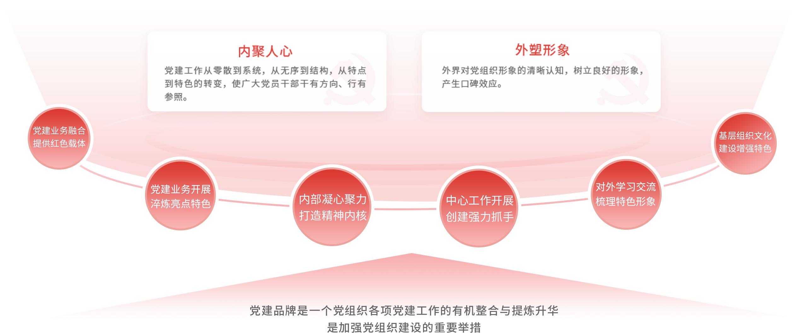
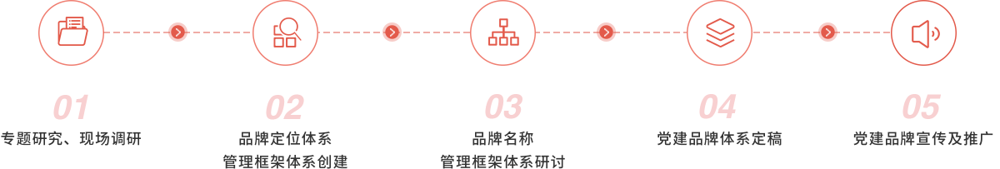

打造党建品牌的重要性
党建品牌创建存在的问题
创牌的政治站位不够高
认识上的偏差导致党员干部的政治站位低，视野和思路都比较狭隘，创牌的思路不够清晰，创牌的方案不够有规划性和针对性，创牌的步骤不够严谨，创牌
的措施不够具体。
党员创牌参与率不够高
各级党组织的创牌工作表面上轰轰烈烈，实际上党员创牌的参与度并不高。党建品牌糙品多、精品少
一些党建品牌的命名缺乏“党味”，仅从名字上无法分辨出是党建品牌还是业务工作品牌，比如“五色花海”、“七色花瓣”等。
党建品牌的作用发挥不充分
部分党组织的党建品牌和单位的中心工作没有完全融合，从本质上来说创牌不但没有解决“灯下黑”和“两张皮”
问题，反而成为“灯下黑”和
党建品牌创建优势
权威背书
专业团队
完整体系
品牌宣发
党建品牌创建流程图
党建品牌产品产出形态
党建品牌建设产出物
党建品牌名称及内涵、党建品牌LOGO及释义、党建品牌管理框架体系、党委支部党建品牌树、党建品牌工作规划、党建品牌落地实践案例
咨询服务、分析报告
为党组织提供具有参考意义的专题项目咨询报告，包括不限于项目规划、可行性策划报告、案例评估报告、指数报告)等专报。
闭门会、研讨会
根据党组织需求定制化打造讲座/培训课程，邀请国家高端智库党建专家、学者、知名媒体人等围绕党建创新、领导力提升等主题，结合单位实际提出策略建议
与赋能思路。
党建品牌年会、党建品牌书籍出版等
充分发挥“人民系”平台优势，与各级党组织联合主办高水平党建品牌年会、论坛及相应系列活动，深度传播党建创新典型实践案例，交流互鉴，探讨可落地、
可推广、能长效的党建品牌建设经验，扩大党建品牌影响力和传播声量。
 置顶
置顶